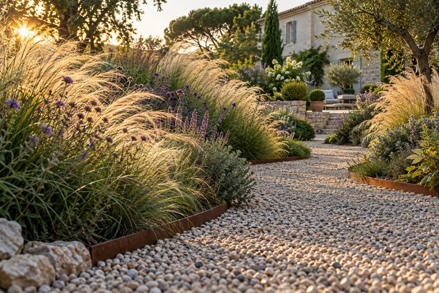
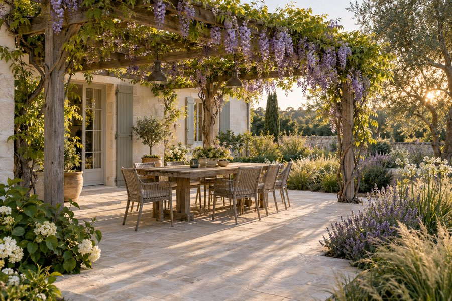
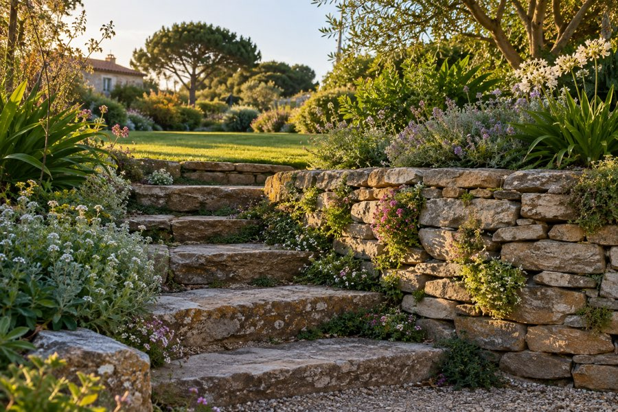
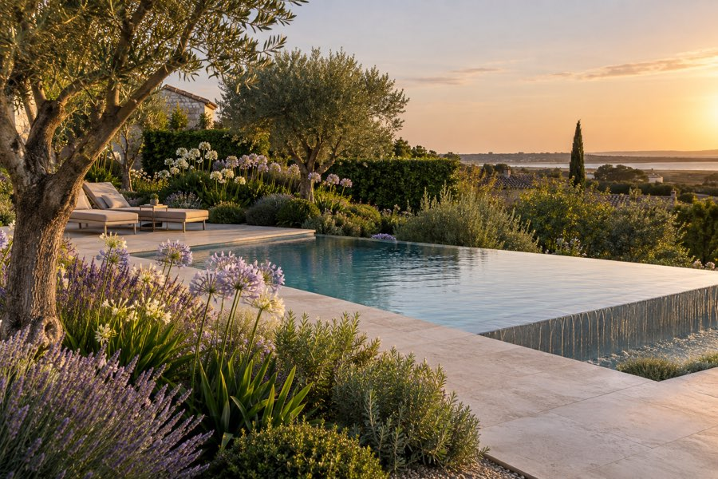
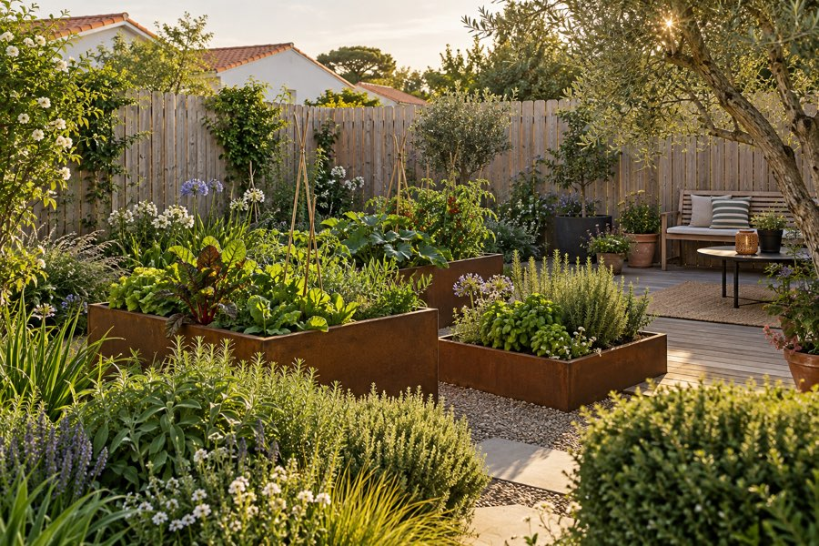
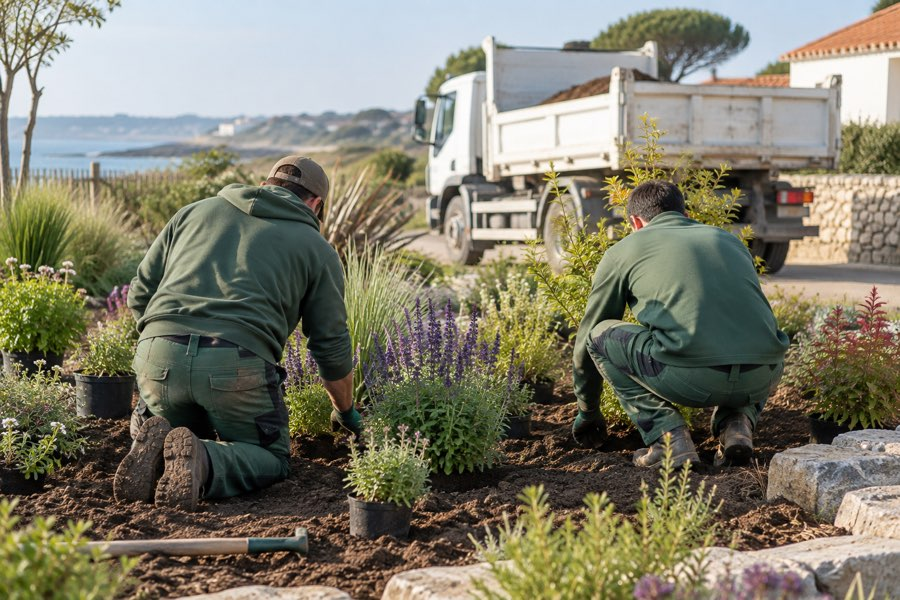

Création de jardin
Plan à l'échelle, choix des végétaux adaptés au sol et à l'exposition, plantation et paillage. Des jardins qui demandent peu d'eau et peu d'entretien.
Comment nous concevons un jardin
Création de jardins et de terrasses, Vendée
Nous dessinons et réalisons votre extérieur, de la terrasse aux plantations, autour de La Roche-sur-Yon et sur la côte vendéenne. Une visite sur place, un plan, un devis détaillé sous dix jours.
Ce que nous faisons
Nous concevons le jardin, nous le réalisons avec notre propre équipe, et nous revenons la première année pour vérifier que tout a pris.

Plan à l'échelle, choix des végétaux adaptés au sol et à l'exposition, plantation et paillage. Des jardins qui demandent peu d'eau et peu d'entretien.
Comment nous concevons un jardin
Bois, pierre naturelle, grès cérame ou gravier stabilisé. Nous posons sur des fondations faites pour durer, avec les pentes et les évacuations qui vont avec.
Nos terrasses et nos allées
Murets, escaliers, soutènements et bordures en pierre du pays. Le relief d'un terrain devient un atout au lieu d'un problème.
Murets, escaliers et soutènements
Plages, plantations qui tiennent la chaleur et cachent le vis-à-vis, éclairage discret. Le bassin est posé, nous faisons tout ce qui est autour.
Ce que nous faisons autour d'un bassinTrois chantiers récents
Aizenay, jardin de graminées
Allée en gravier de Vendée bordée d'acier corten, massifs de stipas, miscanthus et sauges, arrosage enterré. Le jardin se tient seul dès le deuxième été.
Talmont-Saint-Hilaire, terrasse et pergola
Dallage en pierre naturelle sur chape drainante, pergola en chêne, plantation d'une glycine et de lavandes. La terrasse reste fraîche en plein mois d'août.

La Roche-sur-Yon, jardin de ville
Palissade en bois clair, carrés potagers en corten, petite terrasse et banc sous un olivier. Tout a été monté à la main, sans engin, par le passage latéral.
Comment ça se passe

L'entreprise
Fondée en 2011, Terre & Sève travaille avec deux pépinières vendéennes et choisit des végétaux qui supportent nos étés secs et nos hivers humides. Nous ne sous-traitons pas la plantation.
Où nous intervenons
Dites-nous ce que vous avez et ce que vous aimeriez. Nous vous rappelons sous 48 heures pour fixer la visite.